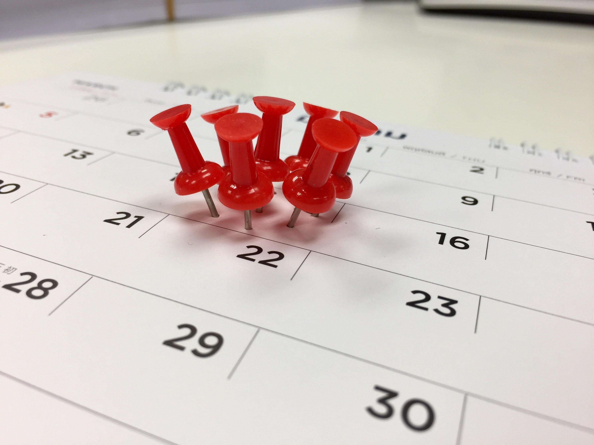

Так много разных задач и планов, а в неделе всего 168 часов. Вы хотите быть продуктивным и в работе и в семейной жизни, но у вас не хватает времени, чтобы успеть сделать все дела из вашего списка. Вам кажется, что вокруг вас царит беспорядок и хаос или просто слишком много планов и вы не знаете, где найти столько энергии и сил. Вам все это знакомо?

Вам следует понять, что время – это не враг, а ваш друг. Вы столько можете сделать, если у вас есть цели и возможности. Главное – это правильно организовать себя и свое время. Это касается не только работы, но и других аспектов вашей жизни. Самодисциплина является ключом к успеху. Человек, который не может контролировать свою жизнь и быть дисциплинированным, не может добиться желаемых успехов. Если вы ничего не можете добиться, это приводит к стрессам, снижению продуктивности и дезорганизации. Получается замкнутый круг!
Существует огромное количество синонимов к этому слову: дисциплина, саморазвитие, самоконтроль, мотивация и т.д. Когда есть мотивация, то организовать себя становиться легче. Например, если вы работаете и у вас есть много задач, то вы все равно выполните их рано или поздно. Все потому, что ваш начальник платить вам зарплату. Если вам нужно ехать на работу на 9 часов, то вы поедете и выполните те задачи, которые перед вами стоят. А вот что, если вы и есть начальник? Бизнесмены, предприниматели, они просто обязаны быть организованными. Вам следует помнить, что вы капитан корабля. Организованность поможет вам добиться успеха в вашем деле, выполнить в два раза больше дел, сэкономить время и деньги.
Начинать новый день проще, когда у вас есть план. Вы знаете какие у вас задачи и сразу начинаете выполнять их одну за одной, не тратя время на то, чтобы вспоминать какие важные дела вас ждут сегодня.
Это одна из основных вещей в планировании. Вы должны четко понимать, хотите ли вы достичь тех или иных целей или нет и в зависимости от этого уже привязывать свои действия к вашим целям.
Вы хотите сделать все, но у вас просто не хватит времени на все встречи, проекты и т.д. Расставьте задачи по приоритету. Иначе вы будете постоянно ощущать стресс, раздражительность и ваша продуктивность снизиться. Поэтому так важно правильно расставить приоритеты.
Делегирование является одним из важнейших принципов продуктивности в работе. Не пытайтесь делать все в одиночку и позвольте другим выполнять некоторые задачи.
Вы можете использовать блокнот, календарь или другие средства календарно-сетевого планирования. Это поможет вам придерживаться плана и быстрее достигнуть выполнения своей цели.
Существует множество «поглотителей» нашего времени: социальные сети, телевидение, сообщения, пустые разговоры и т.д. Многие люди, когда просыпаются, сразу же проверяют свою почту, читают новости в социальной сети Facebook. Это все отнимает ваше драгоценные минуты и даже часы.
Вы думаете, что так вы тратите свое время и можете успеть сделать больше? Это не так. Делайте небольшие перерывы. Это поможет вам отвлечься и восстановить силы.
Эта рекомендация касается таких вещей, как откладывание дел, перфекционизм, многозадачность, новые несрочные задания, которые внезапно появились и т.д.
Устанавливайте сроки для любой задачи.
Всегда, когда вы что-нибудь делайте, перепроверяйте все свои действия, иначе в будущем вам снова придется тратить время на одну и ту же работу.

Успешные люди умеют планировать свое время. Но за каждым их успехом стоит огромный труд и работа над собой. Чем вы хуже? У них тоже есть 24 часа в сутках, как и у вас. Порой бывает очень сложно сконцентрироваться на работе или определенных задачах. Но нужно выработать в себе ежедневные полезные привычки, которые помогут вам добиться целей и стать более организованным. Если вы можете управлять задачами, то вы можете управлять действиями, а, следовательно, вы можете управлять своим временем. И, в конце концов, рационально используя время, вы можете управлять собственной жизнью!